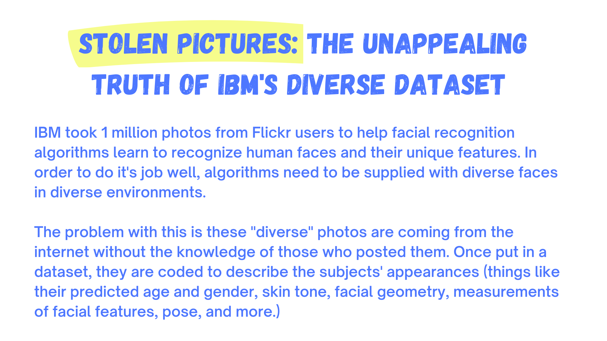
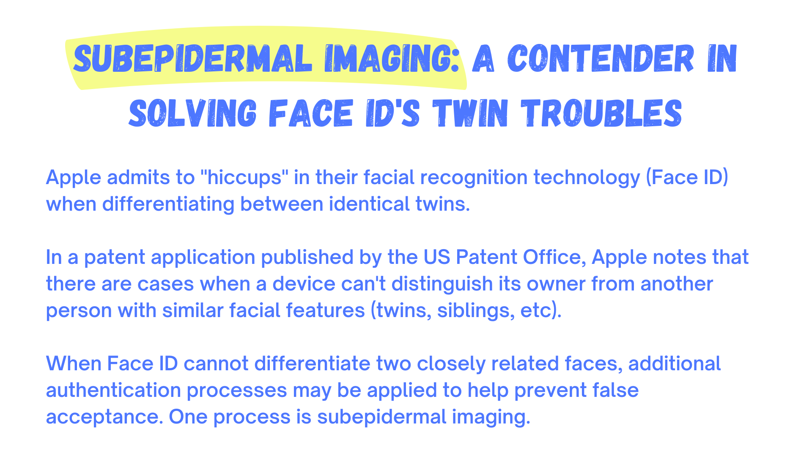

Facing Bias
How It Works
Biases in AI
Improving AI
Future Of AI
Our Story
Community
Solutions
Careers
References


![IBM took 1 million photos from Flickr users to help facial recognition algorithms learn to recognize human faces and their unique features. In order to do it's job well, algorithms need to be supplied with diverse faces in diverse environments.The problem with this is these 'diverse' photos are coming from the internet without the knowledge of those who posted them. Once put in a dataset, they are coded to describe the subjects' appearances (things like their predicted age and gender, skin tone, facial geometry, measurements of facial features, pose, and more.)The goal of IBM's project, Diversity in Faces, is to aid facial recognition in becoming more accurate (especially for women and people of color). Even though IBM's current technology struggles to identify dark-skinned women compared to light-skinned men, the company said, '[T]he Diversity in Faces dataset is purely for academic research and won't be used to improve the company's commercial facial recognition tools.' In addition to the privacy issues taking photos off the internet presents, many people are worried that datasets like this will be used to target minorities and exacerbate bias. Concerningly, IBM is not the only tech company to use publicly available photos - dozens of others have done the same](assets/stolenPictures2.png)
![Apple admits to 'hiccups' in their facial recognition technology (Face ID) when differentiating between identical twins. In a patent application published by the US Patent Office, Apple notes that there are cases when a device can't distinguish its owner from another person with similar facial features (twins, siblings, etc). When Face ID cannot differentiate two closely related faces, additional authentication processes may be applied to help prevent false acceptance. One process is subepidermal imaging. Subepidermal imaging could be used to analyze subepidermal features (such as blood vessels/veins) when a phone is attempting to authenticate a user. These features may then be compared to templates of the enrolled user of the device. One advantage to supepidermal imaging (besides it being able to tell the difference between twins and siblings) is that it could prevent someone wearing a face replication method (a face mask/mold) from unlocking your device. Vein patterns are usually unique to individuals (even identical twins). Assessment of the subepidermal layers of the face is a promising step in securing the future phones of people with similar surface features.](assets/subepidermalImaging2.png)